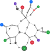
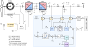
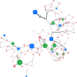

Slides on the Web
Ready-made slides to copy and edit.
CONICET
Research Institute of Electrical Engineering
Contents
Blocks side by side
columns · block
Side by side
Each block takes an equal share of the row. On a narrow screen they stack by themselves.
A card
A block is a raised card.
Stacked
rows · block
Blocks one above the other
The same blocks, stacked however wide the screen gets.
A tighter gap
Vertical space is the scarce one, so stacked blocks sit closer together.
Three or more
Every block added joins the stack, at the full width of the row.
A grid
grid · block-wide · data-reveal
Two columns and two rows
A wide block spans the whole row.
Arriving together
These two share a step, so one press brings both.
Waiting in place
Until then they show as faint shapes, so nothing moves when they arrive.
One item at a time
lines · data-reveal="each"
- The first item is already there when the slide arrives.
- Each press brings the next; the rest wait.
- The counter and the rail stay fixed: a step is not a slide.
- Come back from the next slide and every item is already shown.
Highlighting the last one
lines · data-reveal-alert
- The item that has just arrived takes the highlight color.
- It returns to normal as soon as the next one comes.
- Step back and the item before it is highlighted again.
- Put it on one list, one slide, or the whole deck.
In focus
bullets · data-reveal-focus
- The item that has just arrived is at full strength.
- The ones before it step back, still there to read.
- The ones still to come wait as faint shapes.
- Step back and the focus returns to the item before.
Arriving in motion
columns · data-reveal-motion
Hidden until their turn
Nothing on the slide says more is coming, so use it to surprise the audience.
Fade
Hidden, not ghosted, then brought to full opacity.
Glide
It waits a little to the left, then glides into place.
Stagger
Each block starts a moment after.
Rising into place
columns · bullets · data-reveal-rise
A small-signal study
- Model the converter in the dq frame
- Linearize at the operating point
- Compute the eigenvalues
- Read the damping of each mode
- Rank the states by participation
Each line waits below its place, blurred and hidden.
A press lifts it into place, sharpening as it comes.
Step back, and it sinks out of sight again.
Marking a phrase
mark · data-reveal
Every slide is centered on both axes, title included. It carries no number: the counter, the rail and the contents list count the slides for you.
A figure beside text
split · fig
- A figure is drawn at the width its own file declares, 88 mm here.
- The caption is automatically numbered, in the order the figures appear.
- The block beside it takes whatever width is left.

A figure occupying the whole slide

Referring to a figure
split · fig-h · fig-ref · block-highlight-a · block-highlight-b
A figure without a caption
split · fig-no-caption · data-reveal-motion

No caption
So the figure takes no number either.
Figure first, and then the blocks
It stands alone when the slide arrives. One press brings both.
An equation in three steps
process · block
-
Store
Paste the LaTeX into an equations file, under a key.
-
Place
Leave an empty element carrying that key where the equation belongs.
-
Refer
Cite it from any sentence. The number is automatically filled.
Numbered
data-eq
Numbered for you, and cited from any sentence as (\ref{eq:park}).
Unnumbered and inline
columns · data-eq-mode
On a line of its own
In a sentence
The damping ratio follows from the shaft stiffness.
Typed in place
A single symbol can be typed straight into the text: \(\theta_s\)
gives \(\theta_s\).
Color and systems
rows · data-eq
Three colors are defined in light and dark modes: \({\color{colMyRed}\omega_n}\), \({\color{colMyBlue}\zeta}\), and \({\color{colMyGreen}\theta_s}\).
Each row has its own number: (\ref{eq:pq1}) and (\ref{eq:pq2}). Go to (\ref{eq:park}).
Code, marks and footnotes
data-eq · split · code · mark · fn · footnote
<div data-eq="bhaskara"></div>
bhaskara: String.raw`
\frac{{ - b \pm \sqrt {{b^2} - 4ac} }}{{2a}}
`
A listing keeps the file's own lines, a marked phrase stands out, and a marker takes the next number.
Bold picks out the part the slide is about.
Numbering starts again on every slide, and the notes sit above the footer.
Definition, theorem, example
block-titled · block-alert · block-example
Definition
The damping ratio of a mode \(\lambda = \sigma \pm j\omega\) is \(\zeta = -\sigma / \sqrt{\sigma^2 + \omega^2}\).
Theorem
A system is stable if every eigenvalue has a negative real part.
Example
\(\lambda = -0.93 \pm j9.35\) gives \(\zeta = 0.099\): stable, but poorly damped.
Nomenclature
table · columns
| Park transform | |
|---|---|
| \(\mathbf{P}\) | Park transformation matrix |
| \(\theta_s\) | angle of the rotating reference frame |
| DC link and PMSG | |
| \(C_{dc}\) | DC-link capacitance |
| \(v_{dc}\) | DC-link voltage |
| \(\omega_B\) | base angular frequency |
| \(\omega_r\) | rotor speed |
| \(\Psi_m\) | permanent-magnet flux linkage |
| \(i_{sq}\) | stator current, q axis |
| \(p_c\) | converter power |
| Power transfer | |
|---|---|
| \(p_v\), \(q_v\) | active and reactive power |
| \(E_v\) | internal voltage magnitude |
| \(V_e\) | grid voltage magnitude |
| \(\delta\) | angle between the two voltages |
| \(R_t\), \(X_t\) | total resistance and reactance |
| Drive train | |
| \(\zeta\) | damping ratio |
| \(D_{tr}\) | drive-train damping |
| \(K_{tr}\) | shaft stiffness |
| \(\omega_{Br}\) | base rotor speed |
Participation Factors
table · table-data · table-highlight
| # | real | imag | \(T_s\) [s] | \(\zeta\) | \(f_n\) [Hz] | PF1 | PF2 | PF3 | PF4 |
|---|---|---|---|---|---|---|---|---|---|
| 1 | -0.2149 | 0 | 18.62 | 1 | 0.0342 | \(\omega_t\)(83.1%) | \(\omega_r\)(16.7%) | \(\gamma_{tr}\)(0.1%) | \(i_{sq}\)(0.1%) |
| 2 | -4 | 0 | 1 | 1 | 0.6366 | \(\beta\)(100%) | |||
| 3,4 | -0.9317 | ±9.345 | 4.293 | 0.09921 | 1.495 | \(\gamma_{tr}\)(49.9%) | \(\omega_r\)(41.3%) | \(\omega_t\)(8.3%) | \(i_{sq}\)(0.3%) |
| 5,6 | -15.91 | ±15.36 | 0.2515 | 0.7193 | 3.519 | \(v_{dc}\)(47.4%) | \(x_{dc}\)(40.7%) | \(i_{sq}\)(5.6%) | \(i_{sq}^\text{ref}\)(4.6%) |
| 7,8 | -43.06 | ±45.17 | 0.09288 | 0.69 | 9.933 | \(\hat\phi_h\)(49.7%) | \(x_l\)(48.9%) | ||
| 9,10 | -68.85 | ±101.1 | 0.0581 | 0.5627 | 19.47 | \(i_{sq}\)(37.6%) | \(x_{sq}\)(30.2%) | \(v_{dc}\)(18.7%) | \(i_{sq}^\text{ref}\)(11%) |
| 11,12 | -111.1 | ±111.1 | 0.03601 | 0.7071 | 25 | \(x_{sd}\)(50%) | \(i_{sd}\)(50%) | ||
| 13 | -303.4 | 0 | 0.01319 | 1 | 48.28 | \(i_{sq}^\text{ref}\)(63.5%) | \(i_{sq}\)(13.1%) | \(x_{sq}\)(11.8%) | \(v_{dc}\)(11%) |
| 14,15 | -407.3 | ±380.7 | 0.009821 | 0.7305 | 88.73 | \(x_{cq}\)(46.6%) | \(i_{cQ}\)(37.6%) | \(i_{eQ}\)(8.5%) | |
| 16,17 | -443.9 | ±444.7 | 0.009012 | 0.7064 | 100 | \(x_{cd}\)(47.2%) | \(i_{cD}\)(46%) | \(x_{cq}\)(4.6%) | |
| 18 | -1.516e+05 | 0 | 2.638e-05 | 1 | 2.413e+04 | \(i_{eD}\)(96.2%) | \(i_{cD}\)(3.4%) | \(i_{eQ}\)(0.4%) | \(i_{cQ}\)(0%) |
| 19 | -2.088e+05 | 0 | 1.916e-05 | 1 | 3.323e+04 | \(i_{eQ}\)(74.8%) | \(i_{cQ}\)(24.7%) | \(i_{eD}\)(0.4%) | \(i_{cD}\)(0.1%) |
Key results
results
- 19 eigenvalues in the model
- 0.099 lowest damping ratio, modes 3,4
- 1.5 Hz their natural frequency
Two methods compared
columns · pro · con
Grid-following
- Simple, mature control
- Tracks its power set point closely
- Needs a stiff grid to lock on to
- Gives no inertia by itself
Grid-forming
- Sets its own voltage and frequency
- Runs on a weak grid, or alone
- Current limiting under faults is harder
- Less field experience
A literature slide
bullets · data-cite
- Transient stability with converter-based generation
- Current limiting under faults
- Damping of oscillations
- Grid-forming synchronization
- Frequency support
- Grids on 100% renewable energy
- Wind energy conversion
Hover a number to read the full reference.
AC current dynamics
bullets · data-eq · data-reveal-alert
As explained in , dividing by \({V_B} = {Z_B}{I_B}\) gives
The nominal angular frequency of the AC grid is used as the base frequency \(\omega_B\).
Now build your own
Copy a slide and change it!